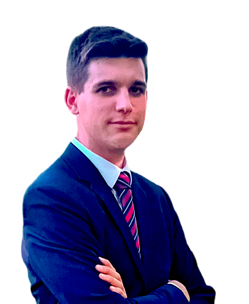

Je suis un ingénieur passionné par l'aéronautique, actuellement étudiant à l'École Centrale de Lyon. Mon expertise inclut la mécanique des fluides, la simulation numérique et les systèmes complexes.


Ingénieur en aéronautique - École Centrale de Lyon
Je suis un ingénieur passionné par l'aéronautique, actuellement étudiant à l'École Centrale de Lyon. Mon expertise inclut la mécanique des fluides, la simulation numérique et les systèmes complexes.